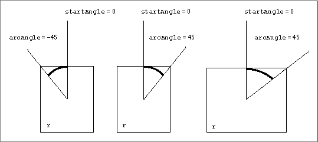

Legacy Document
Important: The information in this document is obsolete and should not be used for new development.
Important: The information in this document is obsolete and should not be used for new development.


Drawing Arcs and Wedges
An arc is defined as a portion of an oval's circumference bounded by a pair of radii. A wedge is a pie-shaped segment bounded by a pair of radii, and it extends from the center of the oval to the circumference. You use theFrameArcprocedure to draw an arc, and you use thePaintArcorFillArcprocedure to draw a wedge. Using theEraseArcprocedure, you can erase a wedge, and, usingInvertArc, you can reverse the colors of all pixels within a wedge. (Although this procedure operates on color pixels in color graphics ports, the results ofInvertArcare predictable only with 1-bit and direct color pixels.)These procedures take three parameters: a rectangle that defines an oval's boundaries, an angle indicating the start of the arc (the variable
startAngle), and an angle indicating the arc's extent (the variablearcAngle). For the angle parameters, 0 indicates a
vertical line straight up from the center of the oval. Positive values indicate angles in the clockwise direction from this vertical line, and negative values indicate angles in the counterclockwise direction, as shown in Figure 3-20.Figure 3-20 Using angles to define the radii for arcs and wedges

Subtopics
- FrameArc
- PaintArc
- FillArc
- EraseArc
- InvertArc